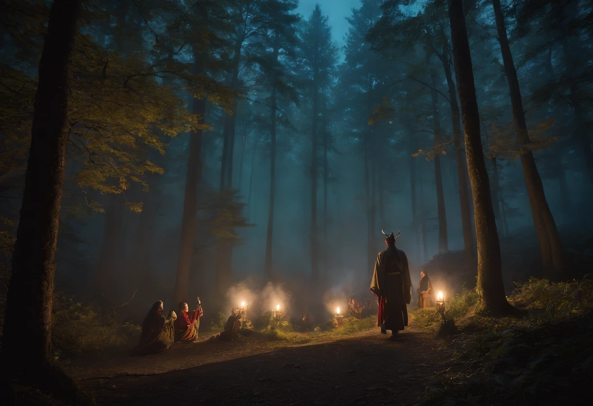

<!DOCTYPE html>
<html lang="pt-br"></html>
  <head>
    <title>Entrando na Floresta</title>
    <meta charset="utf-8">
    <link rel="stylesheet" href="style.css">
  </head>
  <body>
    <div class="main">
      <h1>Entrando na Floresta</h1>
      <p>Você decide seguir a trilha para a floresta. À medida que avança, a vegetação se torna mais tensa e o som do tambor fica cada vez mais alto. Finalmente, você chega a uma clareira onde um grupo de nativos está realizando um ritual. Alguns deles o olham e param, olhando para você com curiosidade.</p>
      
      <div style="display: flex; width: 100%; padding-bottom: 25px;">
        <div style="padding: 55px;">
          <strong>Escolhas:</strong>
          <ul>      
            <p><a href="comunicar.html">1. Tentar se comunicar com os nativos.</a></p>
            <p><a href="ritual.html">2. Ficar parado olhando o ritual.</a></p>
            <p><a href="voltar.html">3. Voltar discretamente pelo caminho que veio.</a></p>
          </ul>
        </div>
        <div style="padding: 25px;">
          
        </div>
      </div>
    
    </div>
    
  </body>
</html>
